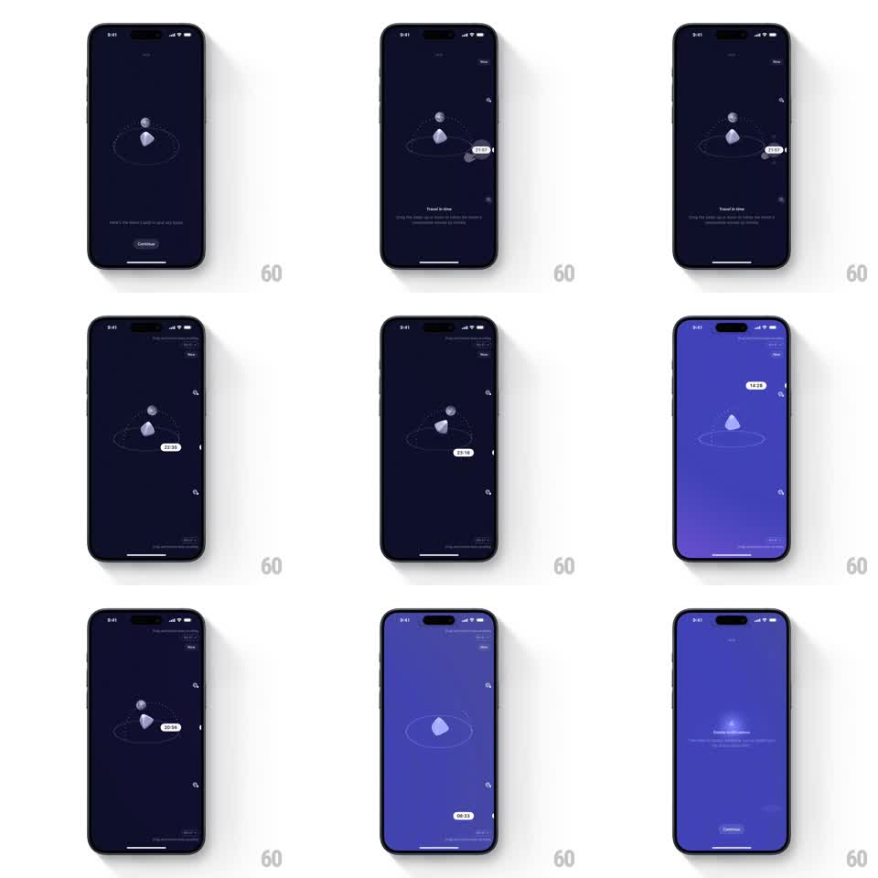

Media
Frame-by-frame

Rebuild this interaction 1:1: Moonlitt's time-travel gesture - dragging vertically scrubs the hour, sliding a 3D moon along its dotted orbit while a time pill tracks the finger and the night sky brightens toward daylight.

Rebuild this interaction 1:1: Moonlitt's time-travel gesture - dragging vertically scrubs the hour, sliding a 3D moon along its dotted orbit while a time pill tracks the finger and the night sky brightens toward daylight. ## Integration Integration: stack-agnostic spec - springs given as stiffness/damping, timed motions as duration + curve; map every value to your framework and animation library of choice. ## Scene Dark navy sky: a 3D moon rides a dotted elliptical orbit around a glowing horizon point; a white time pill (21:57 -> 23:35 -> 09:54 -> 00:33) floats beside the moon; small planet markers dot the edges; onboarding copy "Travel in time" with drag instructions; the sky shifts navy -> royal blue -> soft purple as time moves through dawn. Ends on a "Lunar illumination" reveal with the moon glowing bright. ## Motion spec Pattern: vertical drag scrubbing an orbital clock. - Drag vertically: drag distance maps to time (full screen height = 24h), the moon slides along the orbit ellipse to the hour's position (1:1 while dragging, no lag), and the time pill follows the finger's Y, its text ticking live. - The sky's gradient tweens with the hour (deep navy 22:00-04:00, indigo dawn 05:00-07:00, royal blue day), continuously bound to scrubbed time. - The moon rotates in 3D as it travels (slow spin, ~15deg per orbit quarter) and its phase shading updates with the date-time. - Release: the moon eases to a stop (deceleration 300ms) and the pill docks beside it (spring ~300/20). - Onboarding exit: copy fades (250ms), the moon drifts to center and brightens (glow radius 0 -> 40pt, 600ms) for the illumination reveal. ## Calibration - Time pill text uses tabular numerals so ticking never jitters its width. - The orbit's far side dims the moon slightly (opacity 0.85) for depth. ## Reduced motion Time changes jump between hours with a 300ms crossfade; no orbital travel. ## Don't miss - The drag is vertical even though the moon travels an ellipse - do not map drag to the orbit angle directly. - Edge planet markers parallax slightly (+-6pt) against the moon's travel.